Joshua Tree
A computer you can read end to end. This page is the brand in one place: the mark, the colours, the type and the pieces of the desktop.
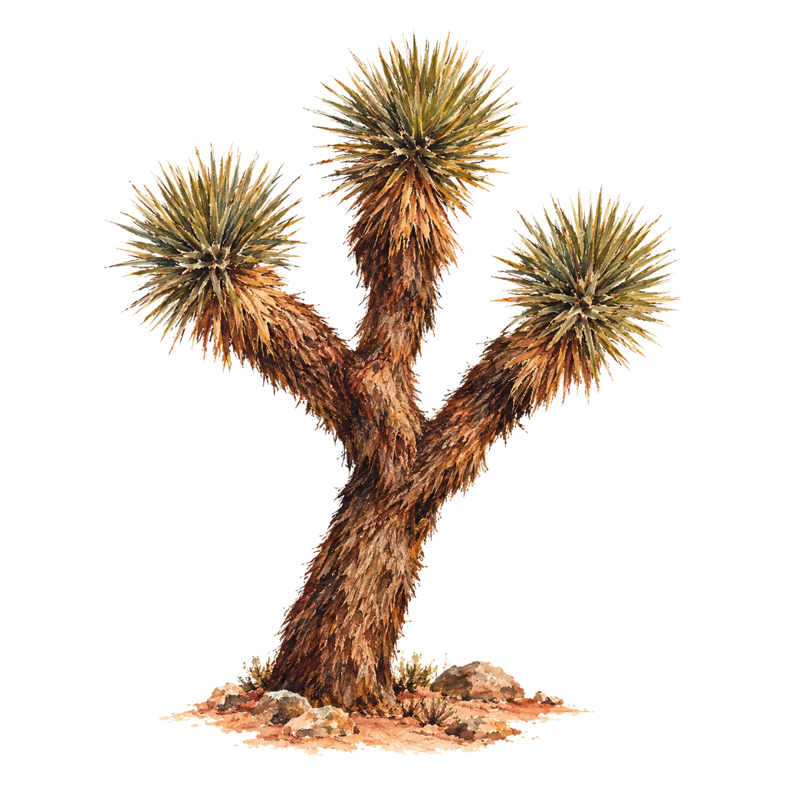
The mark
One Joshua tree, painted. Gouache and watercolour in the manner of a wildlife plate: a shaggy bark trunk leaning left, three arms, a spiky rosette at each tip, and a wash of terracotta soil with a few stones. It keeps its own colours on every page, light or dark. The source is docs/brand/tree.png; every copy comes from tools/gen/gen_brand_art.py.
The glyph
Below 48 px the brushwork turns to mud, so the painting is traced flat: the tree in bark ink, the soil in terracotta, the same pose. The favicon, menu bars and anything 32 px or smaller use it. Never use the glyph large where the painting fits.
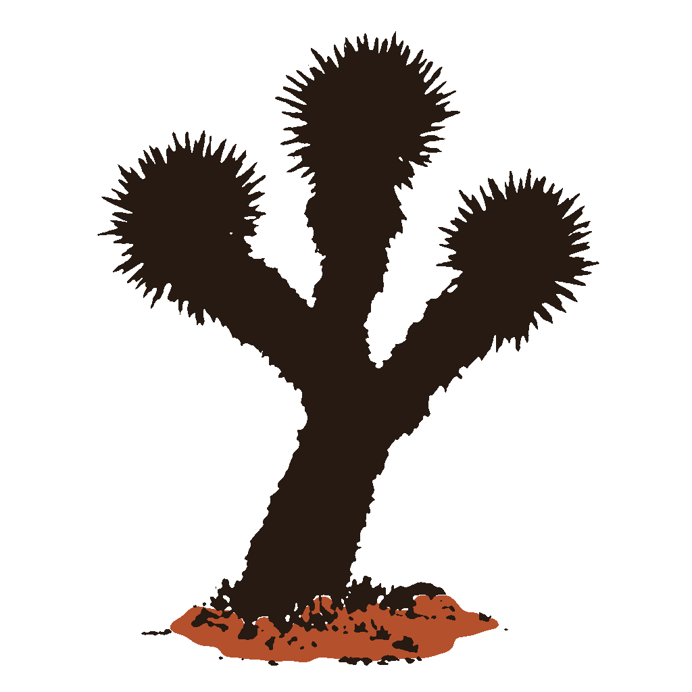
16Colour
Paper, ink and one terracotta, each taken from the painting: its paper, its darkest bark, its soil. The accent is used sparingly: focus rings, links, the one button. Never purple, never teal, never a gradient that changes hue.
- #b5502cTerracottaThe one accent. Ground stroke of the mark, focus rings, links.
- #e08a5fTerracotta, on darkThe same accent on a dark page.
- #f4f3ecPaperPage ground in light.
- #261a13InkText and the mark's line.
- #66574aInk softSecondary text on paper.
- #b8aa96Ink soft, on darkSecondary text on ink.
- #ddd6c6HairlineRules and card edges in light.
From the painting
For brand art only: illustrations, the share card, this page. Never window chrome or text.
- #5a3623BarkThe trunk in shadow.
- #9f693cSiennaThe trunk in light.
- #dca872OchreDry leaves under each rosette.
- #6b6640SageThe living leaves.
- #d98a5aSoilThe ground wash, the accent's lighter self.
On the desktop
- #f5f0ebWindow bodyWINDOW_BODY
- #1c1c1eWindow inkWINDOW_INK
- #d9d3cbWindow ruleWINDOW_RULE
- #efebe4Dock trayDOCK_TRAY_COLOR
- #d6d0c6Tray edgeTRAY_EDGE
- #bdb8b0Menu bar ruleMENUBAR_RULE
- #f4f1ecDock labelDOCK_LABEL_BG
- #ff5f57Close dotCLOSE_DOT
- #e5e5e7Splash greythe Pi boot splash
- #3b6ea5Bluethe flat wallpaper, and the park picture's sky
- #201009Night floorNIGHT_FLOOR, where the wallpaper goes at night
- #ddddddDay tintDAY_TINT
The wallpaper
Joshua Tree National Park at dusk, painted soft: rose and violet ridges, backlit trees and a quiet middle for the dock. It is the Pi's default since 13.27, and the landing and the README use it too. The source is art/wallpaper/park-dusk.jpg. tools/gen/gen_park_wall.py turns it into arch/arm64/park_wall.h: 960 by 540 in 256 colours, scaled up smoothly with no scanlines. Settings can still pick a flat colour.
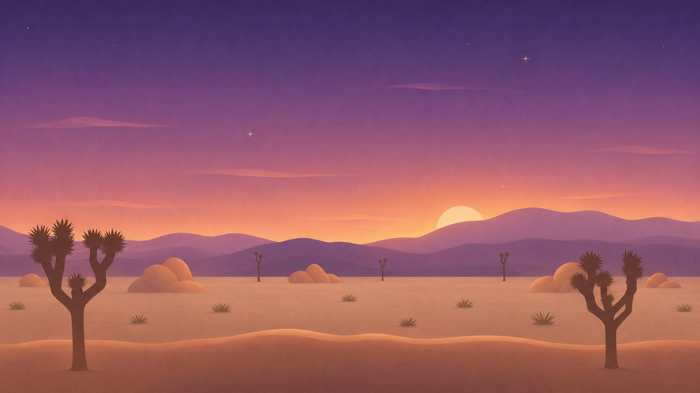
Its colours
For your phone
The same dusk at iPhone size, 1290 by 2796. Wallpaper 1 · Wallpaper 2 · Desktop, 1920 by 1080


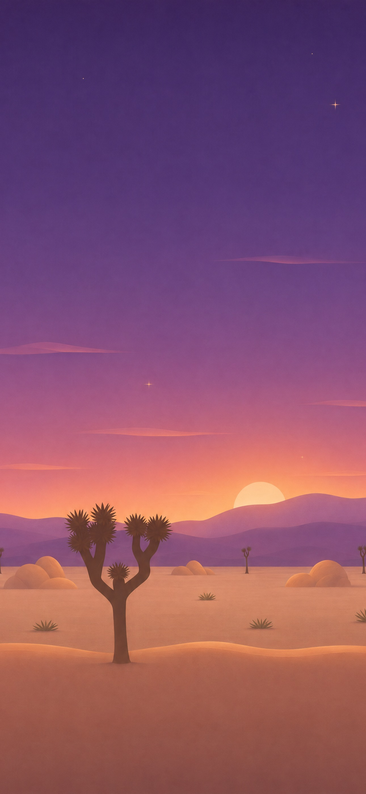
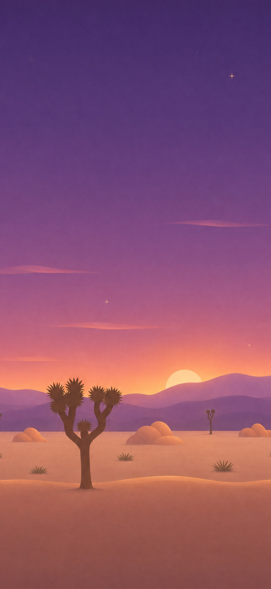
Type
Tree Sans, our own face built from Inter. Text cut below 22 px, Display cut from 22 px up. Nine sizes on a 4 px grid, and weights with jobs: 400 reads, 500 labels, 600 leads, 700 headlines. Sans-serif only.
11 / 16 pxJoshua Tree boots into its own desktop.
13 / 20 pxJoshua Tree boots into its own desktop.
15 / 20 pxJoshua Tree boots into its own desktop.
17 / 24 pxJoshua Tree boots into its own desktop.
22 / 32 pxJoshua Tree boots into its own desktop.
28 / 40 pxJoshua Tree boots into its own desktop.
36 / 48 pxJoshua Tree boots into its own desktop.
48 / 64 pxJoshua Tree boots into its own desktop.
64 / 84 pxJoshua Tree boots into its own desktop.
Space
- 4
- 8
- 12
- 16
- 24
- 32
- 48
- 64
- 96
Icons
Painted, not drawn
Each dock icon is a small painting on a soft rounded tile, in the spirit of Surenix's Ayeris: real colour, a little depth, no clutter.
One light, from the top
A soft highlight across the top, the tile a touch darker below, and no dark outline. iconlight-check.py reads it on the real dock.
No words
No text, letters or wordmarks on any icon. No emblem, no speech bubble, no purple or teal.
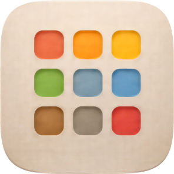
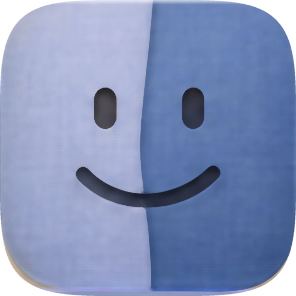
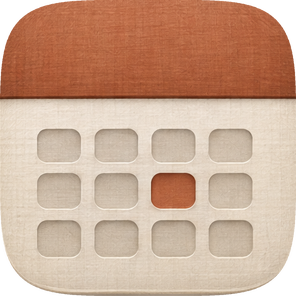
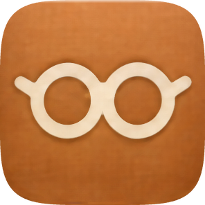
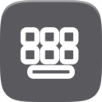
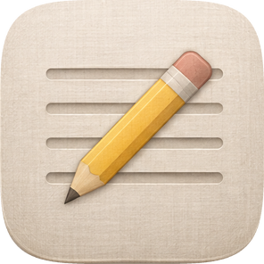
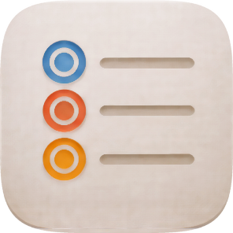
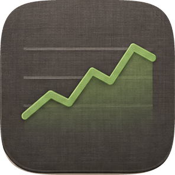
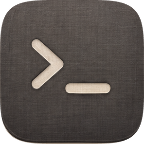
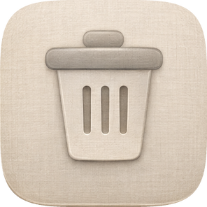
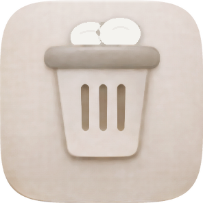
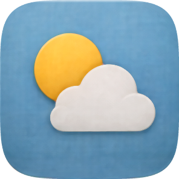
Window and dock
One frame for every window: an 18 px corner, a hairline under the title, the name centred in ink, a red close dot on the left. The dock is a warm cream tray with a soft shadow. Behind them is the park at dusk.
Groceries
Bread, eggs, coffee, a new SD card for the Pi.
What it never does
- Shows a pixel by accident. Text, icons and the wallpaper are all smooth at 2x.
- Draws an emoji.
- Uses purple or teal in an icon or the window chrome.
- Puts a border, stripe or card edge on something just to decorate it.
- Animates windows open, closed or into a snap.
- Turns the wallpaper black and white, or night toward black or blue.
- Uses serif or monospace outside a shell grid.
- Adds a second accent colour.
Mark history
The mark grew one small step at a time, until 8.0 traded the crayon for a painting.
- 1.3The engraved badge traced to clean lines; window buttons, a power-symbol sun and a prompt added.
- 1.4New mark: the engraved tree on its own, a ground line, one ink colour.
- 2.0The engraved look reaches the favicon, the boot splash and the landing seal.
- 2.12The same tree finished more carefully: rounded joints, alternating blades, crowns that stay separate at 32 px.
- 2.25A new, much simpler mark: one tree scribbled in crayon like a hand-drawn album cover.
- 3.0The crayon tree tightened: steadier lines, denser tufts, and the ground in terracotta, its first colour.
- 4.0One more crayon stroke at the foot of the trunk. From here the mark is touched with every major release.
- 8.0A painting replaces the crayon: one Joshua tree in gouache, like a wildlife album cover, with a flat traced glyph for small sizes. Paper, ink and soil come from it.